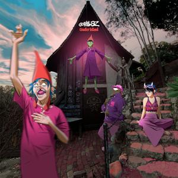
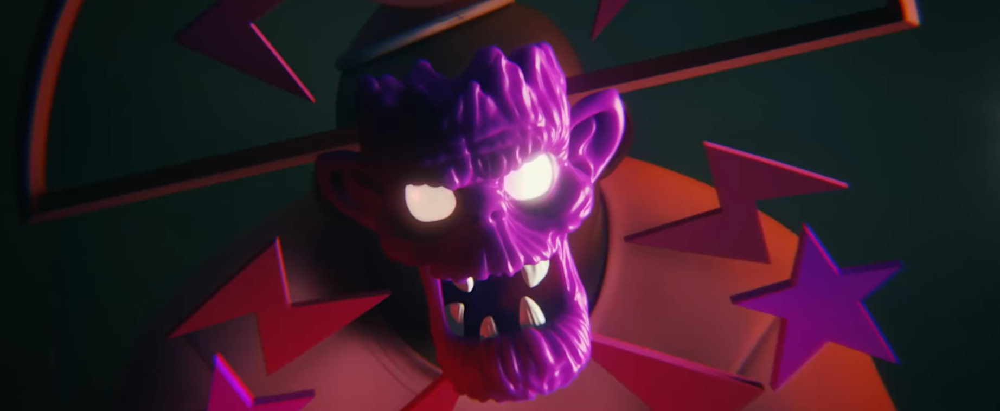
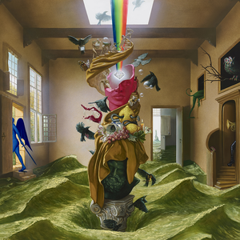
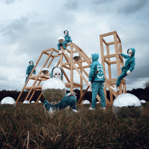
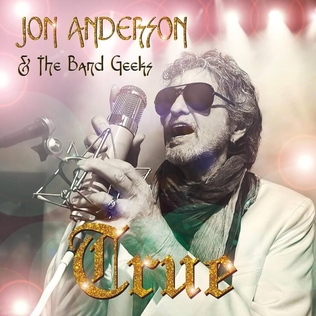

Wanna write something short. Been listening to music at a new job. Here's what's been on repeat for me.
Favorite Song: Song I liked the most.
Runner Up: Song I want to highlight that isn't The Absolute Best Thing On The Album.
"The Single": Song I think most people will like the most, and will be the most popular.
Sleeper: Song I think most people will say they don't like or don't remember, but is one of my favorites.
Most Skipped: When listening to the whole album, this is the song I am most likely to not want to listen to. This isn't "Worst Song" but instead "Song that didn't latch onto me like the other ones did."
Cracker Island
by Gorillaz

Call me a Gorillaz fake fan if you must. For a while I knew people who liked Gorillaz because they were into hip-hop and rap groups, or grew up with Toonami, internet forums, and 2000s MTV.
I am none of those things. In 2005 when Feel Good Inc. was topping charts I was young enough that I would see the music video on commercials for NOW That's What I Call Music! and it would only catch my attention because little Orangestar would go "Oh! Cartoons! I want to see the music video cartoon!"[1]
I always got the feeling that I missed out on some deep ever-changing lore with Gorillaz: My only experience had been Feel Good Inc., people telling me On Melancholy Hill was one of the best songs ever, the Do Ya Thing album art being a meme, and then freaking out that Ace from Power Puff Girls was a temporary member of the band. I didn't even understand the "virtual band" aspect until that third thing. I was just under the impression they were mascots like Eddie from Iron Maiden.
I, like other late Gorillaz arrivals, was introduced to the band's nuance through the fantastic Lady Emily video on Plastic Beach, and oh yeah I missed out on a lot. 2010 Orangestar would have totally tied up the family computer playing the Plastic Beach adventure game considering he was already watching Homestar Runner religiously. Plastic Beach is now one of my all-time favorite albums. I will fully admit to preferring pop-oriented sound to Gorillaz's original hip-hop sound. It's just my preference. O Green World, DARE, and FGI still slap but I would rather be listening to Glitter Freeze than Kids With Guns or Don't Get Lost in Heaven.
With my lack of credentials out of the way I want to make the bold statement that Cracker Island is not Plastic Beach 2, but instead Plastic Beach 1½.[2]
Plastic Beach and Cracker Island are both ambitious concept albums about artificiality and fragility, both are salvaged from larger-scope projects that didn't fully pan out (Carousel and Song Machine Part 2 respectively,) and both released to mixed opinions across the board.
As for my opinion, I love it. It has everything I've come to expect from a Gorillaz album based on my limited recent experience. Bombastic, powerful opening that sets the tone for the album, incredible guest artists who absolutely kill it on their features[3], and a cohesive throughline and theme that paints a visual picture of the caricatured environment Gorillaz inhabit.
It definitely leans less Hip Hop than what most Gorillaz longtime fans may expect, but guest features like Tame Impala should have given that away already. The album begins with hard, driving synths of inspiration and conviction. Cracker Island (the song) has 2-D trance-like proclaiming the final intentions to unify in heaven when all is said and done while a chorus of Thundercat sings the praises of the cult in the background. Oil is a powerful love ballad set to a driving bass and spacey synths in a sound I particularly love.
But this veneer of power and control quickly cracks and falls away to reveal exhaustion. The Tired Influencer sees 2-D lament being accosted by fake digital assistance and falsified claims of social consciousness. "Nothing real anymore in the world for The Tired Influencer." New Gold is a ballad for the content generation machine to create endless drivel to be consumed and discarded.
As most 2-D led projects do, it all comes down to an inward examination on the self and its reflection on the state of culture. The harder, grounded synth noises give way to brighter dreamy hazy sounds and - in moments of rare clarity - pure acoustic guitar. 2-D has lived through unreal situations and practical apocalypse scenarios, and yet the endless drive of daily modern life is what truly drags The Chosen One of this literal cult of personality to his breaking point.
However, while Plastic Beach ended somberly with no issues resolved and the inhabitants needing to cope, Cracker Island sees the singer come to terms with the past that left him longing and asks that we look forward to the future so we may see what the upcoming generation will be capable of.
I haven't been able to find much in the way of supplementary material for Cracker Island. What I have seen on the YouTube channel seems to allude to it existing in a similar manner to Plastic Beach supplementary material, what with the little animatic YouTube Shorts discussing the other cults in Los Angeles, each character's position in the cult, and so on. However, nobody seems to... care? This time around? Nobody's made much of an effort to piece together the story of Cracker Island on TVTropes or Genius beyond the surface level things that are readily available. That feels like a real missed opportunity.
What I'm trying to say is Cracker Island leaves me wanting more, and I think that's a good thing.
Favorite Song: Cracker Island feat. Thundercat
Runner Up: Oil feat. Stevie Nicks
"The Single": Cracker Island feat. Thundercat
Sleeper: The Tired Influencer
Most Skipped: Possession Island feat. Beck
Paradise State of Mind
by Foster the People

Nu-Disco suits Foster the People. I fell in love with the band after their breakout hit pushed Torches into my recommendation feed, and the poppy dance tunes with blaring modern synths let me power through my days. Despite the song he's known for, Mark Foster has such an optimistic sound to his output that you can't help but smile at while listening.
I made early comparisons to Passion Pit when hearing this album. Mark's straining high pitch is certainly part of the reason, but spacey 70's inspired synths are what cinched it for me. It feels retro in the way that indie bands experimented in the late 2000s. I also found many melodies and synths sounded incredibly similar to my favorite experimental rock group Black Moth Super Rainbow, but that's likely a coincidence since BMSR's notable gimmick is analog electronic instrumentation, which was common in the 70's.
There's a lot to love here. Paradise plays with scales and tones to shift from familiar, cozy, warm synth to raw, tense signals. The Gospel backing on Paradise State of Mind (the song) gives me lovely flashbacks to an album I won't mention anymore because the artist behind it is a Nazi.
It's not all perfect. Feed Me stands out as a low point on the album. Between the blippy monotonous tunes and the faux-smooth vocalizing of "we're compatible" this sounded less like an earnest computer themed love song and more like a rejected Lemon Demon comedy song demo. Sometimes I Wanna Be Bad is content to sit alone in a lukewarm bathtub repeating its platitudes to itself, never going anywhere. Glitchzig, while one of my favorites, has a really weak start that may be abrasive to some - and others might deride as "gleep glorp ass music".
If I may level a personal charge, I don't think the explicit lyrics were worth adding. They don't seem to gel with the songs' feel very well and just make it so I can't play the songs for younger audiences. "My vibe is fresh as fuck" is a line that I groan at in a song that is otherwise my favorite.
If you're looking for spacey retro style pop funk, though, you can't go wrong. Existing Foster fans will find a lot to love, while newcomers may have their palette lightly challenged in a good way.
Favorite Song: Take Me Back
Runner Up: Paradise State of Mind
"The Single": Lost In Space
Sleeper: Tied between Let Go, The Holy Shangri-La and Glitchzig
Most Skipped: Feed Me
The Phantom Five
by AWOLNATION

It just feels like AWOL lost it by the end, you know? I've been excited for this album since it was teased last year in the Spotify Wrapped special messages, and even more so when it came out that this was to be the last album as a sort of celebration of the entire project. I like every AWOLNATION album but I can't help but feel that this album is very sterile compared to his previous output. Everything feels very safe verse-chorus-verse-chorus-bridge-chorus blah until something like Bang Your Head shows up and your brain gets rattled and you're like the GIF of Drew Scanlon hearing a double entendre.
Maybe I just need more repeat listens. I totally wrote off Runts the first time I heard it too but ended up including songs like My Molasses in my list of AN favorites... but I can't help it! After Angel Miners and the Lightning Riders sounded like you were sitting in on a live show of an airline carrier suddenly salvaged by God in the midst of its death spiral Phantom makes me feel like the army vet struggling to get a job after being discharged.
I could be conflating the sound of AWOL with his looks though. Aaron Bruno has historically been photographed with signature long blonde hair and chin stubble. He's cut the hair short and let the mustache grow out. You can see the cut hair on My Echo, My Shadow, My Covers & Me[4] but the facial hair makes him look like a TV sitcom dad. I listen to Dark Matter and I imagine him with the long flowing hair operating the controls while overseeing the resonance cascade. I listen to Candy Pop and I imagine the cut hair without the mustache but instead with the Jerma Red Wine Lipstick look - played for drama instead of comedy. But I listen to Panoramic View and I see that fuzzy lip slug. Come on, champ, let's get you suited up for the big football game! Believe in magic and anything is possible!
I should be talking about the music instead. Alright. Jump Sit Stand March isn't as poignantly angry as prior works but isn't warm enough to make up for it in the chorus. I like Barbarian but I have to admit it's just a more boring version of Radical. Bang Your Head should've been an instrumental without the intro because it just sounds like Cannonball without the conviction. Everything else blurs together in whatever piano melodies showed up on the piano roll today.
Even the traditional "album closer" song feels less involved. I don't want to say "phoned in" because music making is hard but this is not AWOL's best work. Compared to prior progressive masterpieces like Knights of Shame and Stop That Train, it feels like - in an album full of mostly-safe 3 minute rock songs - Outta Here is 5 minutes solely because it "had to be." And like... it doesn't have to be, Bruno! If you wanna stop doing the bombastic closing song on the album you can absolutely just release an album without a bombastic closing song.
There's still some winners in here. Party People is a good jumping rock song with its guitar backing track, Panoramic View is fine but incredibly poppy, and I Am Happy is carried by Del's infectious groove. It's not a bad album by any right, it's just a boring AWOLNATION album.
So that's how the project ends. Not with a bang but with a whimper.
Side tangent: I'm glad Del the Funky Homosapien is doing all these guest songs. Every song I hear him on is just a treat to listen to for the ears. He knows how to pick em. He's even on the deluxe of Cracker Island which I talked about earlier on this page.
Favorite Song: I Am Happy
Runner Up: Party People
"The Single": Panoramic View
Sleeper: Barbarian
Most Skipped: Jump Sit Stand March
True
by Jon Anderson and The Band Geeks

I feel blessed.
Jon Anderson is seventy nine years old and I've been able to see him in concert twice touring with The Band Geeks - once as a headliner and once opening for El Monstero. Not only that, but he's still got it! I got chills the first time I got to hear him sing Starship Trooper live.
The Band Geeks should not be slept on either. For a ragtag group of musician friends, they rock. They work their respective instruments, they've got stage presence that rallies the crowd, and unlike late 70s Yes, they can sing good backing vocals. I wanted to give special mention to "their keyboardist" but when I looked up names it turns out they all rock keyboards. Stupidly well. Have you heard Roundabout's keyboard section? I heard them do it perfectly live. Twice.
I got to hear Shine On while seeing them most recently in concert and if you ignored the explanation of it being a new song on a new album that preceded the piece, you could have absolutely slipped it in the middle of the set of Yes all time classics and I bet nobody would have been able to notice it wasn't a part of the original albums until they realized that they didn't know the lyrics.
Now having finally gotten the chance to hear this all new album of all new tracks from possibly my favorite prog rock writers of all time,[5] this album comes out the door swinging. True Messenger is a 5 minute long epic about spirituality and unity, and should slot nicely with your dadrock playlist. Counties and Countries just keeps going and I'm onboard for the entire ride. Still A Friend is a funky jive with drum fills that inhabit my head.
Gospel choirs have been a recurring theme on this page and Make It Right fills the role for this album, merging the song perfectly into Realization Part Two. Everything flows like a waterfall cascading down a mountaintop. It all comes to a head in Once Upon a Dream, a sixteen minute anthem that you can float on like an oxygen powered starship... and it's still not over.
There are no losers on this album. Everything has a place. Even my "most skipped" here doesn't get skipped. Its a full hour of fresh music with a classic rock feel.
A while ago I was under the impression that the technique and expertise required to create prog with this level of experimentation and, hell, even this sound had been lost to time. As acts like Wolfmother and now The Band Geeks have taught me, that sound is still there, but few are trying for it.
If you want classically sounding prog rock injected right into your veins this is not an album to sleep on.
Favorite Song: Once Upon a Dream
Runner Up: True Messenger
"The Single": Shine On
Sleeper: Counties and Countries
Most Skipped: Build Me an Ocean
I would have been 9.↩︎
Yes, like the Lion King sequel.↩︎
Not counting Beck. Honestly, after learning the dude is a huge squirrel buster I have no respect for the guy, music notwithstanding. Surprised he agreed to work on an album about internet culture being cultish without realizing the obvious parallels people would draw.↩︎
Goddamn it, Beck showed up again. Why are people just letting him walk into studios?↩︎
I'm a Rush fanboy, but I have to admit Close to the Edge is a better album than anything Rush ever put out.↩︎